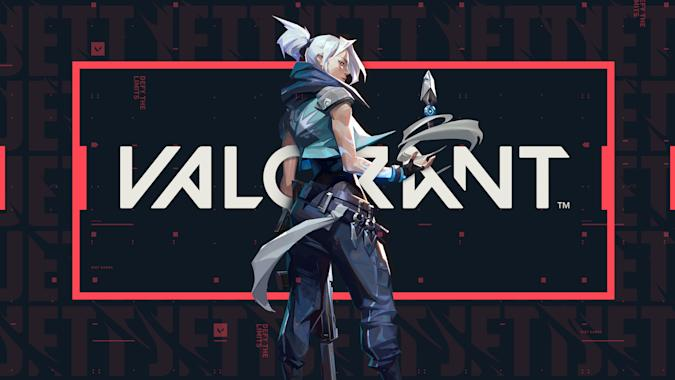
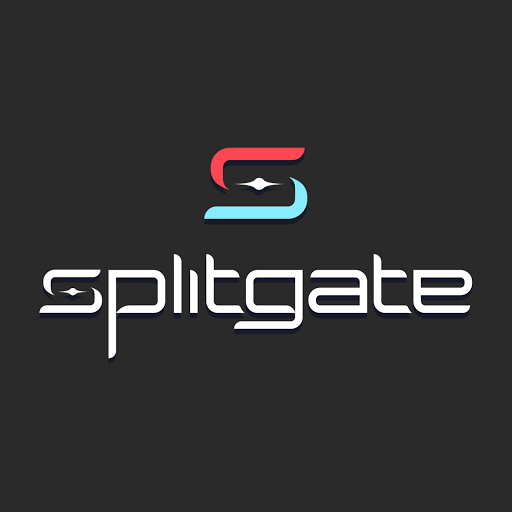
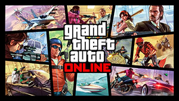

First in my list is Valorant, i have been playing valorant since when i finished my first Pc back in August of 2020 i didnt play since at the time i only played Fortite with online friends but i then i started to play again almost a year after playing in July of 2021 and since there i have been addicted to playing always trying to improve and grind ranked. Second in my list is a fairly new game still in beta called SplitGate, it recieved a ton of hype on social media and at its peak the game went from 4 thousand concurrent players to almost a half ofa million concurrent player since everybody wanted to try it out the queue time was about an hour long just to get in but i like the style of it its like halo but with portals, everytime i play games i go straight to the competative/ranked part of the game and im currently trying to get the highest rank and im almost there beind at champion 1. On my list the third game is GTA V Online, i play it one in a while since i mainly play my top picks but when playing with a friend the new updates are fun and i never seem to get bored of it since playing it on release in 2013. I first started playing Rocket League when it went free to play and have reached Diamond 2 which is 60% of the ranks in the game, one of my friends introduced me to the game and i play it now and then but everytime i play it i seem to not forget the basis of the game. Finally there is Rainbow Six Siege, i recently got this and im starting to play it a bit more often but one of my friends had gottem me to play this, so far im 50/50 about the game.
  Which game would you try out.